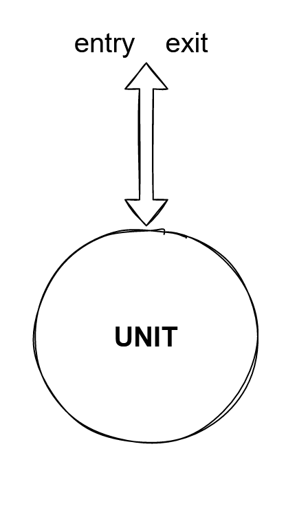
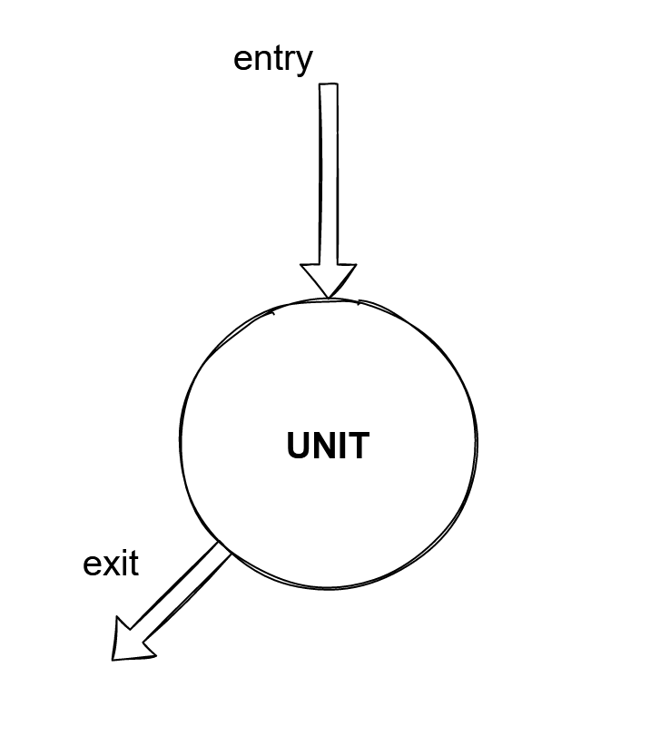
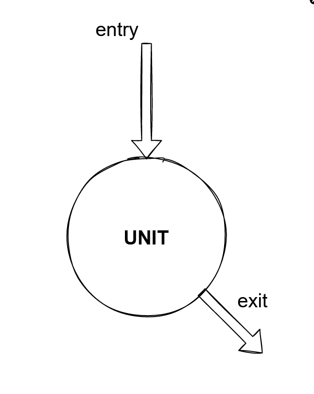

Developer tests
-
Atelier
Sylvain MATHIEU - id. FR Delivery - Equasens
“Nous ne voulons pas avoir des tests juste pour avoir des tests. Nous voulons des tests pour soutenir notre travail.“
Michael Feathers, Working Effectively With Legacy Code
Un test s'adresse à l'interface publique de notre code : comment notre logiciel fonctionne depuis la perspective d'un utilisateur/consommateur de ce logiciel
---
Un test doit chercher à capturer un comportement attendu du système et non pas une implémentation spécifique
On sépare ainsi la conception de l'interface de notre code de l'implémentation "cachée" derrière cette interface
Note : une interface est la surface d'échange entre deux composants logiciels
3 piliers du test unitaires : lisibilité, maintenabilité et confiance
---
3 étages du test unitaire : Given / When / Then ou Arrange / Act / Assert
---
Les tests ne doivent jamais s'affecter mutuellement (jeu de données et états partagés)
On définit un test unitaire à partir de son point d'entrée et de son point de sortie
Un point d'entrée est ce qui est invoqué/appelé en premier, l'endroit par lequel on entre dans le système
---
Un point de sortie est le résultat ou le comportement que l'on obtient
---
On définit ainsi une unité fonctionnelle
Type 1 - Récupération d'une valeur : les points d'entrée et de sortie sont confondus
Type 2 - Changement d'état du système donc le comportement du système change : il faut alors utiliser une différente fonction pour vérifier que le système se comporte différemment
Type 3 - Appeler un système tiers (logger, envoi d'email, etc...) : qch dont nous n'avons pas le contrôle et dont on pourra donner le change
Nous devrions écrire un test pour un seul point de sortie
---
Dit autrement : se limiter à une préoccupation par test car même si un point d'entrée agit sur *n* points de sortie, ces derniers peuvent échouer différemment
Le nom du test devrait exprimer l'exigence/
le comportement désiré du système
---
Le nom du test devrait comprendre les valeurs passées/l'état initial du système à tester et le résultat souhaité du système testé
L'unité testée, les conditions de l'appel et l'attendu :
À ne pas chercher à tester chaque ligne de code. Viser plutôt la vérification d'un comportement attendu.
---
La maintenance et l'évolutivité en dépendent.
“Il n'y a pas d'astuces pour écrire des tests, il n'y a que des astuces pour écrire du code testable“
Miško Hevery, ex Google et créateur d'Angular
TU : logique et exhaustivité / TI : assemblage des composants / E2E : packaging, démarrage complet et rendu
La pyramide des tests vs le cornet de glace : une démarche pratique favorisant les tests qui vérifient la logique / une unité de comportement (TU), puis le cablâge entre le système et un composant externe (TI), puis le rendu (E2E)
FizzBuzz
Créer un composant logiciel capable d'enregistrer un flux. Le flux enregistré devra être nommé comme suit : 'nom-horodatage.extension'
Bonus : varier les modes d'enregistrement, rendre l'enregistrement dés/activable
Un logiciel doit :